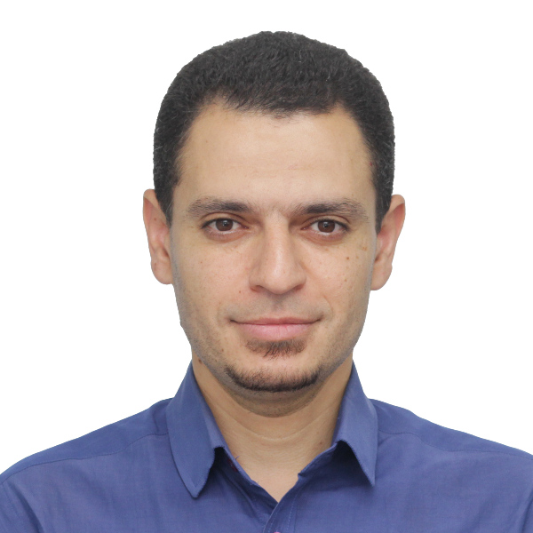
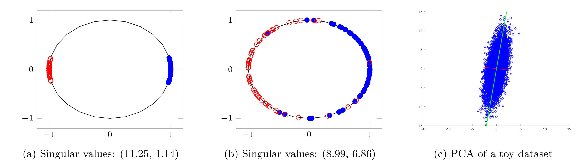
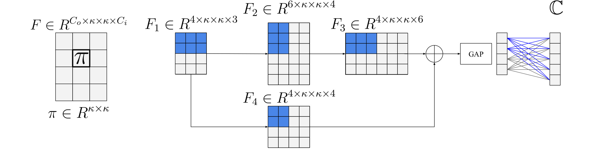
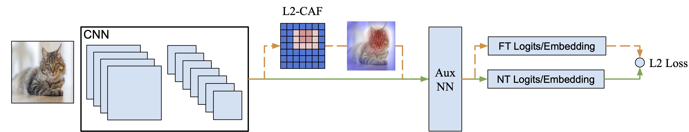
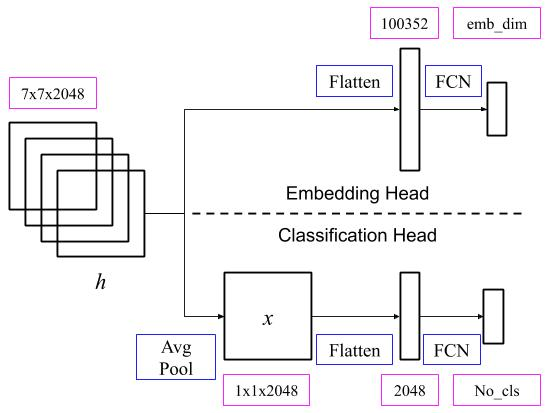
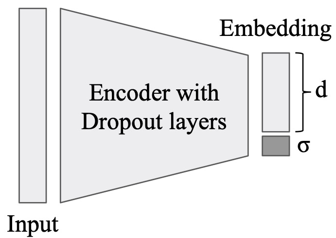
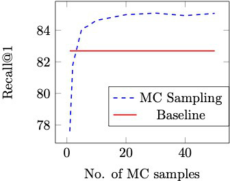
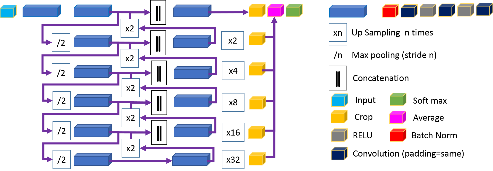
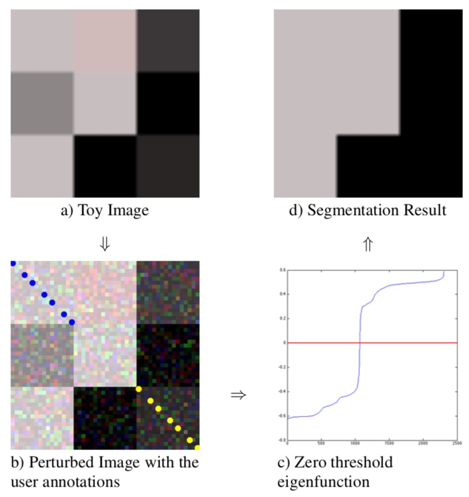

Ahmed Ali Attia Ibrahim Taha
Research Scientist at WhiteRabbit.AI
|  |
Ahmed Ali Attia Ibrahim Taha Research Scientist at WhiteRabbit.AI
|
News
|
Publications
|
Interns
|
Research
|
Awards
|
Teaching
|
| Research Interest: | Feature Embedding, Metric Learning, Deep Networks, Machine Learning, Image segmentation, Texture classification, Patch matching. |
| Technical Skills: | Python, C/C++, JAVA, OpenCV, MATLAB, mex files, and CUDA TensorFlow, PyTorch, Keras, OpenCV, SimpleITK, CAFFE |
| Education: |
Computer Science PhD (+MS) GPA: 4.0/4.0 - University of Maryland Masters of Business Administration (Marketing Major) GPA 3.83/4.0 - Arab Academy for Science and Technology Computer Science BS GPA 3.81/4.0 - Alexandria University- Faculty of Engineering |
|
|
|---|
 |
M&M: Tackling False Positives in Mammography with a Multi-view and Multi-instance Learning Sparse Detector, MICCAI 2023 (acceptance rate 32%)Yen Nhi Truong Vu*, Dan Guo*, Ahmed Taha, Jason Su, Thomas Paul Matthews
Project Page MICCAI Featured |
![Neural networks' building blocks. (Left) A standard convolutional block for vision models with spatial downsampling capability. (Center) A standard attention block for language models with long range attention capability. (Right) Our Attention-Convolutional (AC) block with both spatial downsampling and long range attention capabilities. In the AC block, the conv layer both reduces the spatial resolution and increases the number of channels. Batchnorm and activation (e.g., RELU) layers are omitted for visualization purposes.](./publications/2022_ac_block.jpg) |
Deep is a Luxury We Don't
Have, MICCAI 2022 (acceptance rate 31%)Ahmed Taha*, Yen Nhi
Truong Vu*, Brent Mombourquette, Thomas Matthews, Jason Su, Sadanand Singh
Project Page |
|  | SVMax: A Feature Embedding
Regularizer, arXiv 2021Ahmed Taha, Alex Hanson, Abhinav
Shrivastava, Larry Davis
Project Page |
|  | Knowledge Evolution in Neural
Networks, CVPR Oral 2021 (acceptance rate 24% -- Oral 4%)Ahmed
Taha, Abhinav Shrivastava, Larry Davis
Project Page |
|  | A Generic Visualization Approach
for Convolutional Neural Networks, ECCV 2020 (acceptance rate
27%)Ahmed Taha, Xitong Yang, Abhinav Shrivastava, Larry Davis
Project Page |
|  | Boosting Standard Classification
Architectures Through a Ranking Regularizer, WACV 2020 (acceptance rate
34.5%)Ahmed Taha, Yi-Ting Chen, Teruhisa Misu, Abhinav Shrivastava, Larry Davis
Project Page |
|  | Unsupervised Data Uncertainty
Learning in Visual Retrieval Systems, arXiv 2019Ahmed Taha,
Yi-Ting Chen, Teruhisa Misu, Abhinav Shrivastava, Larry Davis
arXiv Link |
|  | Exploring Uncertainty in
Conditional Multi-Modal Retrieval Systems, arXiv 2019Ahmed
Taha, Yi-Ting Chen, Teruhisa Misu, Larry Davis
arXiv Link |
![(a) An example of sequential residual network. (b) An example of directed acyclic graph. (c) The residual graph derived from (b). (d) The U-Net architecture. Downward arrows represent down-sampling or strided convolutions. Upward arrows represent up-sampling or deconvolution. (e) The Res. U-Net architecture. It consists of two threads. The first thread is scale-specific features: the green channels. It follows a similar architecture to the U-Net. The second thread is the residual architecture, including the red, the orange and the blue channels.](./publications/miccai_2018_junning.jpg)
|
Segmentation of Renal Structures for Image-Guided Surgery, MICCAI 2018 (acceptance rate 34.9%) Junning Li, Pechin Lo, Ahmed Taha, Hang Wu, Tao Zhao |
|  | Kid-Net: Convolution Networks for Kidney Vessels Segmentation from CT-Volumes, MICCAI 2018 (acceptance rate 34.9%)Ahmed Taha, Pechin Lo, Junning Li, Tao Zhao |
 |
Two Stream Self-Supervised
Learning for Action Recognition CVPRW 2018 Ahmed Taha, Moustafa
Meshry, Xitong Yang, Yi-Ting Chen, Larry Davis (DeepVision)- Extended Abstract Github Code |
 |
Recurrent Variational Auto-Encoder, ARXIV 2017Rohan Chandra, Sachin Grover, Kyungjun Lee, Moustafa Meshry, Ahmed TahaGithub Code |
|  | Seeded Laplacian: An Interactive Image Segmentation Approach using Eigenfunctions, ICIP 2015Ahmed Taha, Marwan TorkiGithub Code |
 |
Multi-Modality Feature Transform: An Interactive Image Segmentation Approach, BMVC 2015Moustafa Meshry, Ahmed Taha, Marwan TorkiCode |
Teaching Experience:
(click to see course description)
PostscriptAfter earning my Bsc, I spent some time developing mobile apps for iOS. I co-founded Inova, a software development company.